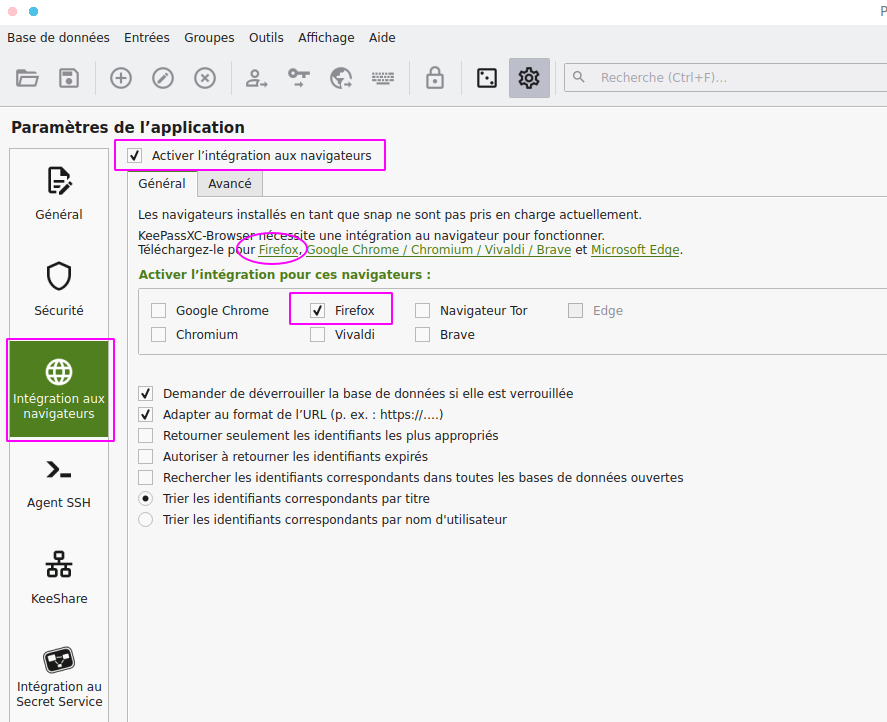
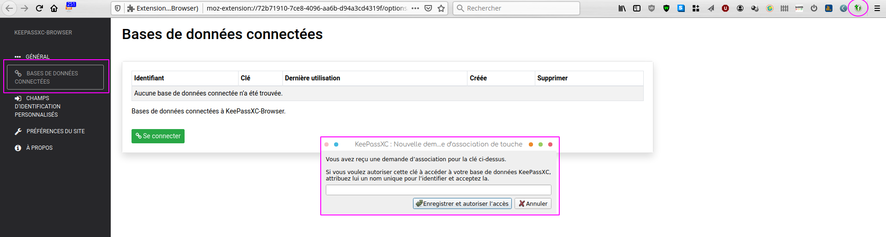
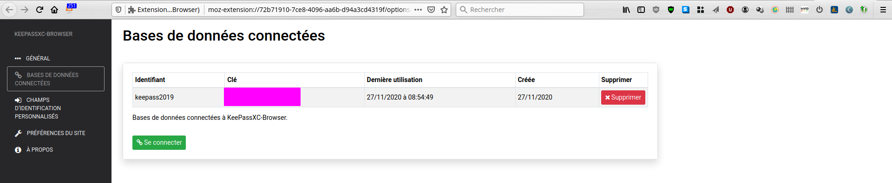
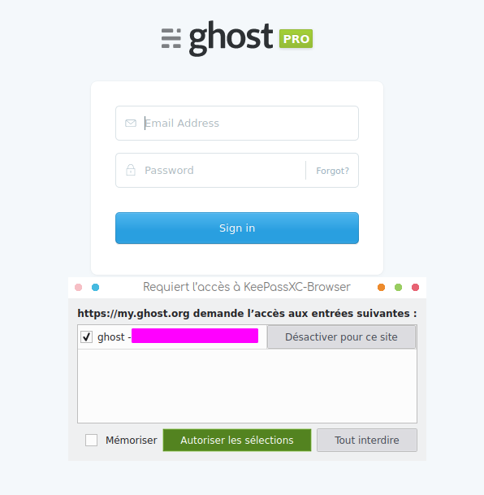

Cliquer sur le bouton de menu outils et sélectionner paramètres.
Depuis ce menu , aller dans intégration au navigateur, sélectionner
ensuite activer l'intégration aux navigateurs, déselectionner votre
navigateur,

Et suivre le lien pour récupérer le adons qui y correspond, et
l’installer.

Connecter la base avec le navigateur en créant une clé. La base est automatiquement détectée. 

Test de la connexion
Par exemple , j’avais essayé ghost.org comme plateforme de blog..
 
Bon ma periode d’essai est dépassée… mais ça fonctionne pas mal.

!bangbang! Attention , en cas d’erreur, vérifier que les champs soient propre et que des mot comme username, ou password ne soient en trop.
Ce travail est sous licence Attribution-NonCommercial 4.0
International.